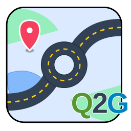

Complete User Manual v0.9.4-Qt6 (Beta)
A powerful QGIS plugin for uploading, managing, and styling geospatial data on GeoServer. Perfect for professional geospatial workflows.
Requires: GeoServer Importer Extension and PyQt6-WebEngine
Important: This plugin was originally developed for internal project use within trusted administrator environments.
Credentials (GeoServer and PostGIS passwords) are currently stored in plain text in local configuration files
(connection.ini and postgis.ini) for convenience.
Recommendation: Only use this plugin on secure, administrator-controlled computers. Password encryption may be available in future versions.